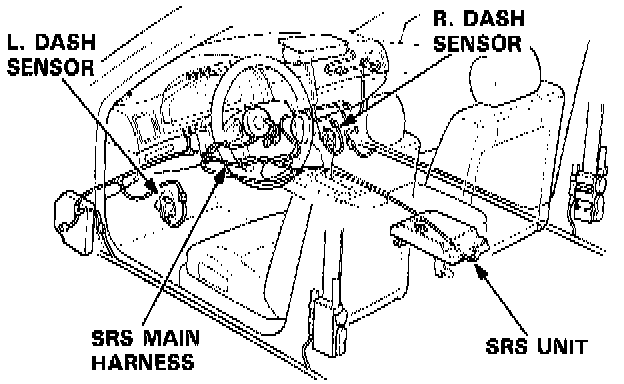
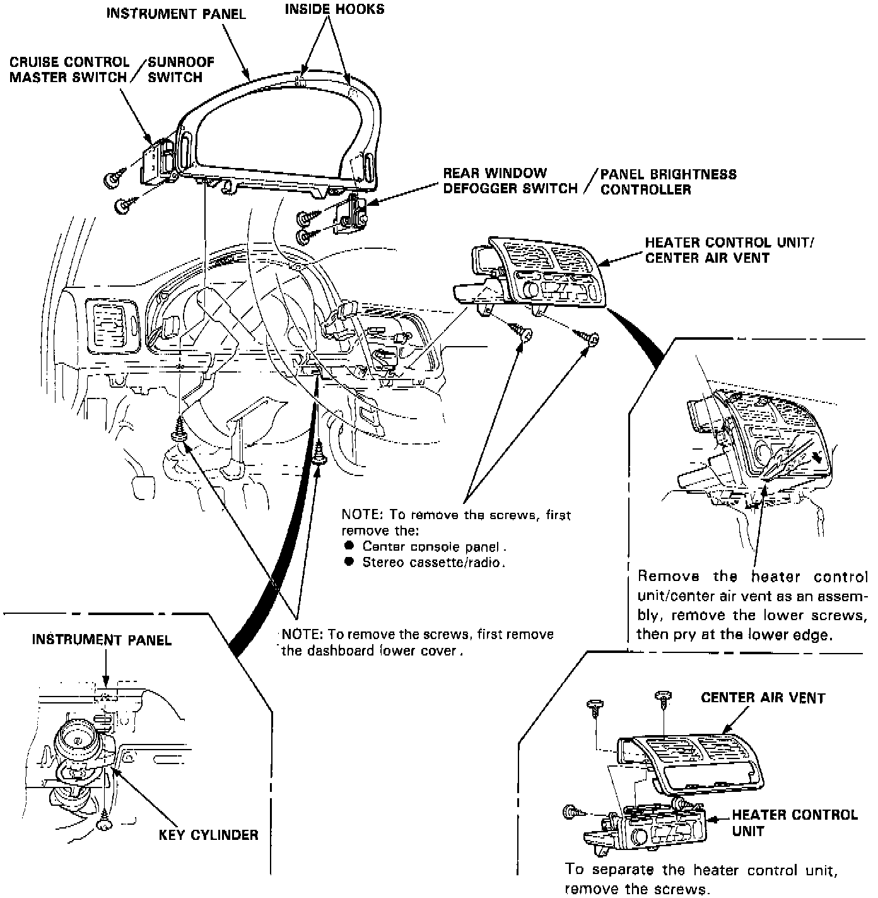
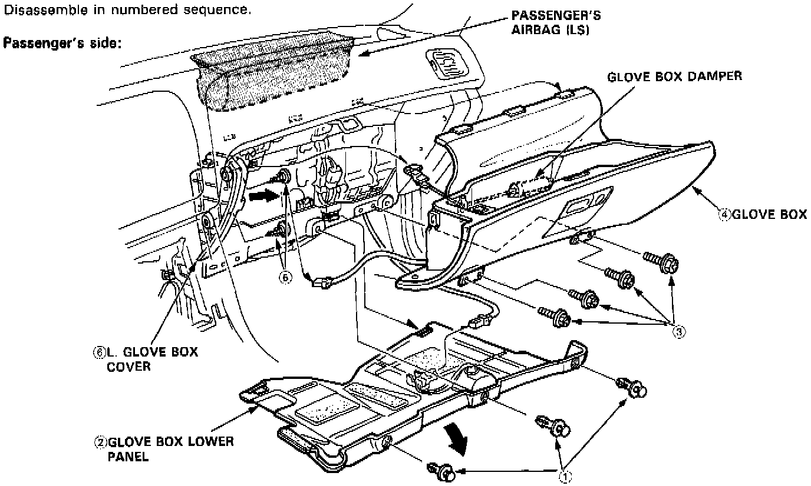
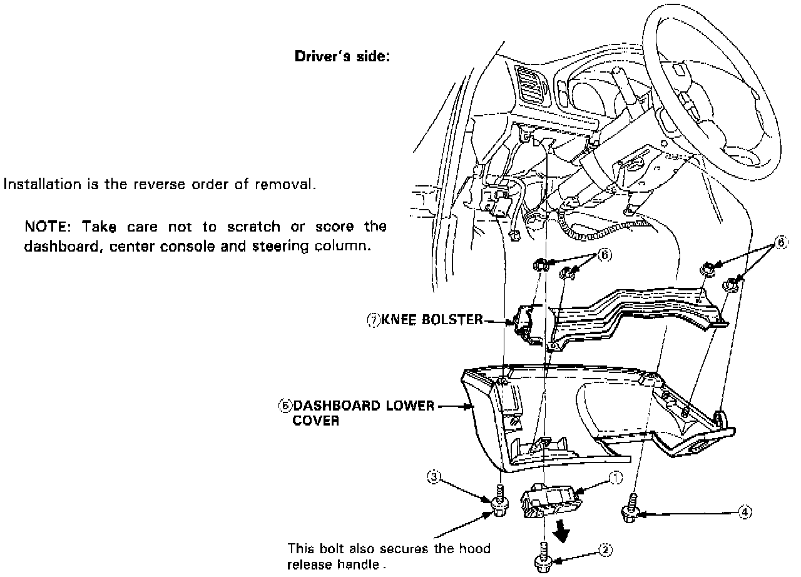

Glove Compartment: Service and Repair

SRS wire harnesses are routed near the steering column and the passenger's side of the dashboard.
WARNING: All SRS wire harnesses and connectors are colored yellow. Do not use electrical test equipment on these circuits.
CAUTION: Be careful not to damage the SRS wire harnesses when servicing the steering column and glove box.
Dashboard Component Removal / Installation
NOTE: Take care not to scratch or score the dashboard and steering column.

Refer to image for removal of instrument panel components.

Refer to image for disassembly of glove box and lower cover. Disassemble in numbered sequence.

Refer to image for removal of dashboard lower cover.
Installation is the reverse order of removal.